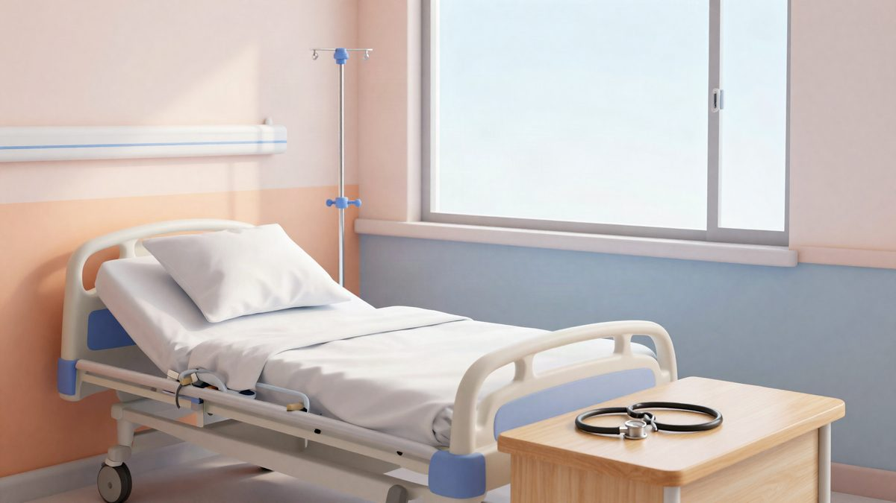
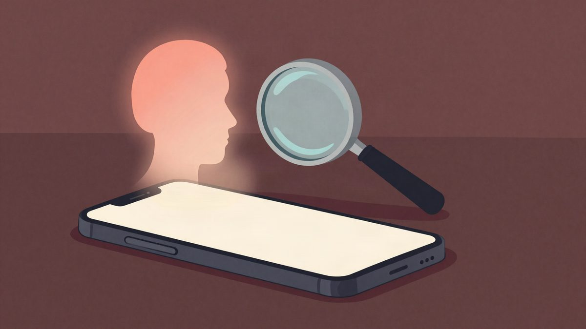

Pacijent s rakom želuca IV. stadija nakon kemoterapije, imunoterapije i operacije bez znakova tumora

Onkolog Magomed Sulimanov iz klinike SM-Klinika opisao je slučaj 64-godišnjaka s rakom želuca IV. stadija kod kojeg kontrole od rujna do studenoga 2026. ne pokazuju znakove tumora. Liječenje je počelo u travnju terapijom citostaticima i imunopreparatima, a nastavilo se operacijom i imunoterapijom. Uz slučaj liječnik objašnjava kada se koristi kemoterapija i što su donijele ciljana terapija i imunoterapija.
Onkolog Magomed Sulimanov iz klinike SM-Klinika opisao je slučaj 64-godišnjeg pacijenta s rakom želuca IV. stadija. Kontrolni pregledi od rujna do studenoga 2026. pokazali su da nema znakova tumora. Liječenje je počelo u travnju predoperacijskom terapijom citostaticima i imunopreparatima, a nastavilo se operacijom i imunoterapijom nakon nje.
Tijek liječenja
Muškarac se u travnju javio zbog dugotrajnih bolova u gornjem dijelu trbuha i gubitka težine od 8 kg u mjesec dana. Gastroskopija je pokazala infiltrativno-ulcerozno oštećenje tijela želuca. Biopsija i CT trbušnih organa potvrdili su adenokarcinom tijela i antruma želuca s udaljenim metastazama u retroperitonealnim limfnim čvorovima.
Onkološki konzilij odlučio se za neoadjuvantnu, odnosno predoperacijsku terapiju citostaticima i imunopreparatima. Kontrola nakon terapije pokazala je da tumora u želucu više nema, pa je u kolovozu napravljena subtotalna resekcija želuca. Uklonjeni su i regionalni limfni čvorovi, veliki i mali omentum te žučni mjehur. Patohistologija je pokazala potpunu terapijsku patomorfozu, što znači da nema znakova primarnog tumora ni udaljenih metastaza. Nakon operacije pacijent je nekoliko mjeseci primao imunoterapiju kako bi se smanjio rizik od povratka bolesti. Prema liječniku, dobro se osjeća i nastavlja kontrole u klinici.
Kada se koristi kemoterapija
Kemoterapija djeluje na tumorske stanice koje se brzo dijele. Za razliku od kirurgije i zračenja djeluje sustavno, preko krvotoka. Ne dobivaju je svi onkološki pacijenti, a o njoj odlučuju vrsta tumora, stadij, tijek bolesti, opće stanje pacijenta i očekivana učinkovitost.
Može se koristiti za smanjenje tumora prije operacije i za smanjenje rizika od recidiva nakon nje, kad u tijelu mogu ostati mikroskopske tumorske stanice. Koristi se i za kontrolu bolesti kad metastaze već postoje.
Ciljana terapija i imunoterapija
Kemoterapija može oštetiti i zdrave stanice koje se brzo dijele, primjerice u koštanoj srži, sluznicama i folikulima dlake. Zato su se od 1990-ih i 2010-ih razvile ciljana terapija i imunoterapija. Ciljana terapija koristi lijekove prilagođene genetskoj mutaciji tumora, utvrđenoj molekularno-genetskom analizom, a zdrave stanice gotovo ne dira. Imunoterapija pomaže imunološkom sustavu da prepozna i uništi tumorske stanice. Ovisno o tumoru, ponekad se kombiniraju s kemoterapijom.
Popratno liječenje
Nuspojave kemoterapije uključuju mučninu, povraćanje, probleme s crijevima, jetrom i žučnim sustavom, upalu sluznica, opterećenje srca i krvožilnog sustava, gubitak kose, slabiji apetit i slabost. Neki lijekovi pogoršavaju krvnu sliku i povećavaju rizik od infekcija.
Za ublažavanje se koriste lijekovi protiv povraćanja, infuzije za nadoknadu elektrolita i lijekovi koji potiču stvaranje krvnih stanica kad padne razina neutrofila. Kod raka dojke ili prostate kosa se može zaštititi hlađenjem vlasišta kapom, koje počinje 30 minuta prije davanja lijekova. Univerzalne protutumorske dijete nema, pa se prehrana prilagođava pojedinom pacijentu uz onkologa i dijetetičara. Stroge dijete, gladovanje i vitamini bez preporuke liječnika ne preporučuju se.
Izvor: Habr vijesti
Povezani članci
 Alibabin model za CT otkrio je rak debelog crijeva kod 41 pacijenta bez simptoma18. studenoga 2026.
Alibabin model za CT otkrio je rak debelog crijeva kod 41 pacijenta bez simptoma18. studenoga 2026.
TikTok uvodi provjeru AI sadržaja i detekciju lažnih likova javnih osoba20. studenoga 2026. Skimmer kartica preko WebRTC-a pronađen je na stranicama Samsonitea, Revolvea i Lascane tjedan prije Black Fridaya27. studenoga 2026.
Skimmer kartica preko WebRTC-a pronađen je na stranicama Samsonitea, Revolvea i Lascane tjedan prije Black Fridaya27. studenoga 2026.